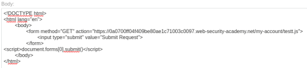

Exploiting path mapping for web cache deception
- Provided with blog website, credentials “wiener:peter”, told to find the API key for user carlos.
- Logged in with provided credentials
- After logging in the my-account page contains my API key, so targeting /my-account
- Intercepted refresh request in burpsuite
- Appended /temp to /my-account to narrow down mapping method
- /temp had no reaction implying Traditional mapping was not being used and RESTful is more likely.
- Tried appending /temp.exe which also resulted in no changes
- Tried .js, .css, and .ico which all contained a X-Cache: miss header and value in the HTTP Response
- This information implies that there is caching present for each of those file types
- Using the provided exploit server, sent victim CSRF attack containing URL with /my-account/testt.js:

- Navigated to /my-account/testt.js and found carlos' cached my-account page displaying API key:
- Submitted API key and completed lab successfully: